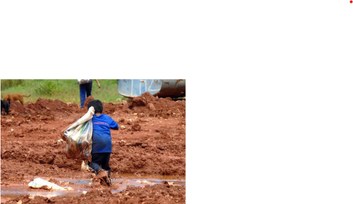

According to the IBGE, the North region of Brazil has 17.7% of child workers, which is higher than the
proportion of people aged 5 to 17 in the region, which is 10.8%.

More than 2,500 children and adolescents were in a situation of child labor exploitation in 2023. In Roraima
alone, 101 cases were recorded, the highest number in a state in the North region. The information was
released by the Ministry of Labor and Employment (MTE), which, through the Labor Tax Audit, removed a total
of 2,564 young people.